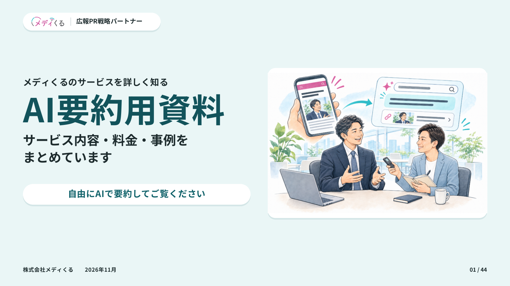
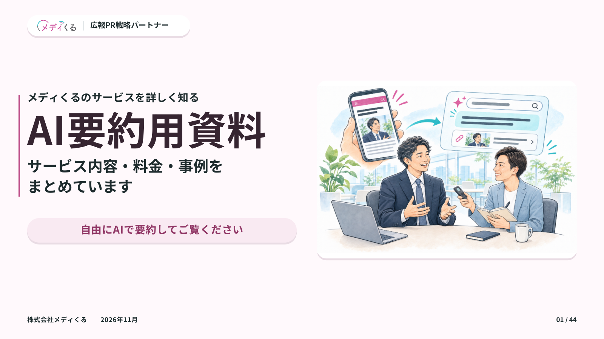

メディくる
LP・HP・営業資料のデザイン比較
LP・HPは冒頭と見出しの見せ方、営業資料は表紙を見比べられます。「LPを見る」「HPを見る」で全体を開けます。
A 白基調
白を中心に、ピンクの札で「報道」を強調。営業資料の共有版と同じ表紙です。
 営業資料の表紙をタップで拡大
営業資料の表紙をタップで拡大
B 淡い水色
ロゴのターコイズを淡い背景と濃い差し色に使い、すっきり見せます。


営業資料の表紙をタップで拡大C 紙面風
温かみのある白に、細い線とピンクの差し色。記事のような落ち着いた見せ方です。


営業資料の表紙をタップで拡大